Driving Axles—Integral Carrier Type (Except Ford Light Duty WER Axle) · 15-03-05
Disassembly
All service operations on the differential case assembly and the drive pinion assembly can be performed with the housing in the vehicle.
Removal of Differential Case and Drive Pinion
- Raise the vehicle and support it on the underbody, so that the rear axle-drops down as far as the springs and shock absorbers permit.
- Remove the cover from the carrier casting rear face, and drain the lubricant.
- Perform the Inspection Before Disassembly of Carrier in Part 4-1, Section 3.
- Remove both rear wheels.
- Remove the brake drums.
- Working through the hole provided in the axle shaft flange, remove the nuts that attach the wheel bearing retainers to the axle housing.
- Pull the axle shafts with the tool shown in Fig. 3. Care must be exercised to prevent damage to the oil seals. Install a nut on one of the brake backing plate attaching bolts to hold the plate to the axle housing after the shaft has been removed. Remove both seals with the tool shown in Fig. 9.
- Make scribe marks on the drive shaft end yoke and the axle U-joint flange to insure proper position of the drive shaft at assembly (Fig. 15). Disconnect the drive shaft from the axle U-joint flange. Be careful to avoid dropping the loose universal joint bearing cups. Hold the cups on the spider with tape. Mark the cups so that they will be in their original position in relation to the flange when they are assembled. Remove the drive shaft from the transmission extension housing. Install an oil seal replacer tool in the transmission extension housing to prevent transmission leakage. Refer to the transmission group for the appropriate tool.
- Remove the differential bearing adjusting nut locks (Fig. 16).
- Mark one differential bearing cap and the case (Fig. 17) to help position the parts properly during assembly.
- Remove the differential bearing cap bolts and bearing caps. Hold the differential case assembly in the housing after the caps are removed.
- Remove the differential case and bearing cups (Fig. 18).
- Hold the drive pinion flange and remove the pinion nut (Fig. 10).
- Remove the pinion flange (Fig. 11).
- With a soft-faced hammer, drive the pinion out of the front bearing cone and remove it through the rear of the carrier casting.
- Drive against the pinion front bearing cone and drive the pinion flange seal and the bearing cone out of the front of the carrier casting.
- To remove and install the pinion rear bearing cone use the tools in Fig. 19 and 20.
- Measure the shim which is found under the bearing cone with a micrometer. Record the thickness of the shim.
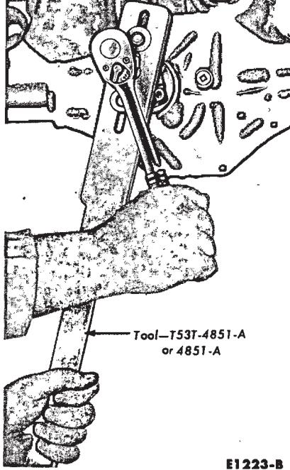
Fig. 11 — Typical Drive Pinion Flange Removal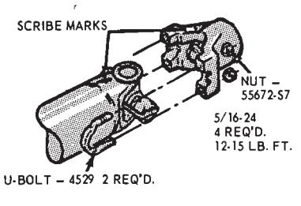
Fig. 15 — Drive Shaft-to-Axle U-Joint Connection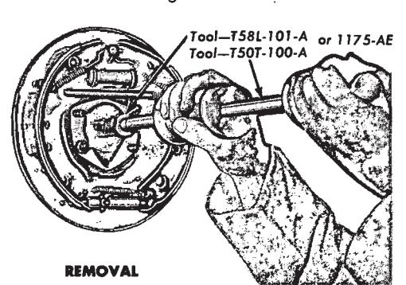
Fig. 9 — Removing and Installing Axle Shaft Seal (Removing Pinion Seal Axle Shaft Oil Seal)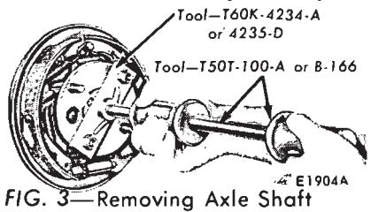
Fig. 3 — Removing Axle Shaft<a id="fig-16"></a>
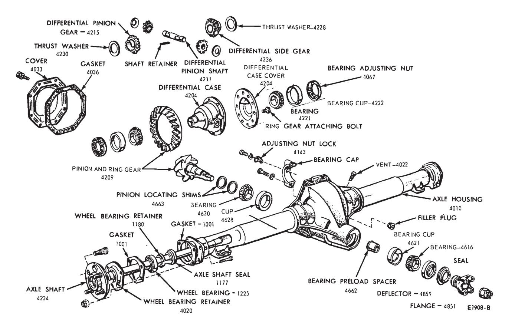
Fig. 16 — Disassembled Rear Axle
<a id="fig-17"></a>
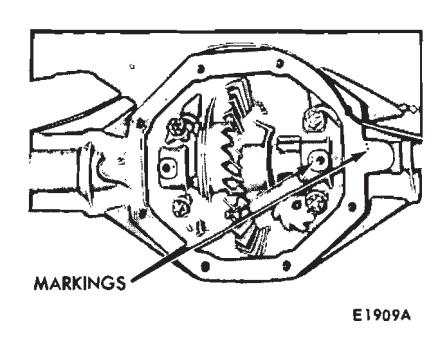
Fig. 17 — Typical Differential Bearing Cap Marking
<a id="fig-18"></a>
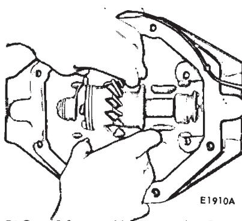
Fig. 18 — Differential Case Removal or Installation
<a id="fig-19"></a>
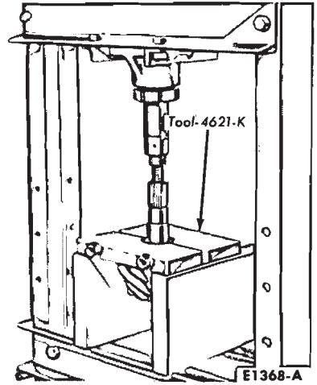
Fig. 19 — Removing Pinion Rear Bearing Cone
Disassembly of Differential Case
- If the differential bearings are to be removed, use the tools shown in Fig. 21.
- Remove the bolts that attach the ring gear to the differential case. Press the ring gear from the case or tap it off with a soft-faced hammer.
- With a drift, drive out the differential pinion shaft lock pin (Fig. 22).
- Drive out the pinion shaft with a brass drift. Remove the gears and thrust washers.
Parts Repair or Replacement
Clean and inspect all the parts as outlined in Part 15-1, Section 3. Before assembling the carrier, repair or replace all parts as indicated by the inspection.
The principal replacement operations are covered in the following procedures. All other repair or replacement operations are performed during Cleaning and Inspection Part 15-1, Section 3, or during the Assembly in this section.
Pinion Bearing Cups
Do not remove the pinion bearing cups from the carrier casting unless the cups are worn or damaged.
If the pinion bearing cups are to be replaced, drive them out of the carrier casting with a drift. Install the new cups with the tool shown in Fig. 23. Make sure the cups are properly seated in their bores. If a 0.0015-inch feeler gauge can be inserted between a cup and the bottom of its bore at any point around the cup the cup is not properly seated.
Whenever the cups are replaced, the cone and roller assemblies should also be replaced.
Drive Pinion and Gear Set
Individual differences in machining the carrier casting and the gear set require a shim between the pinion rear bearing cone and the pinion gear to locate the pinion for correct tooth contact with the ring gear.
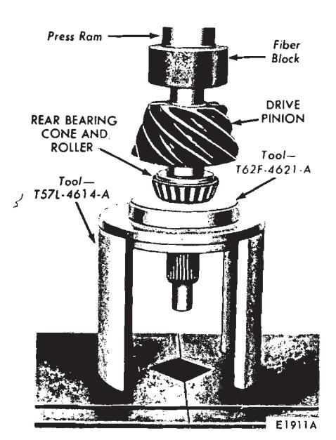
Fig. 20 — Installing Pinion Rear Bearing Cone
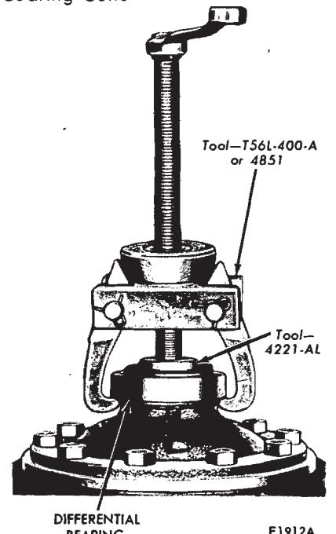
Fig. 21 — Differential Bearing Removal
When replacing a ring gear and pinion it should be noted that the original factory installed shim is of the correct thickness to adjust for individual variations in both the carrier casting dimension and in the original gear set dimension; therefore, to se- lect the correct shim thickness for the new gear set to be installed, follow these steps:
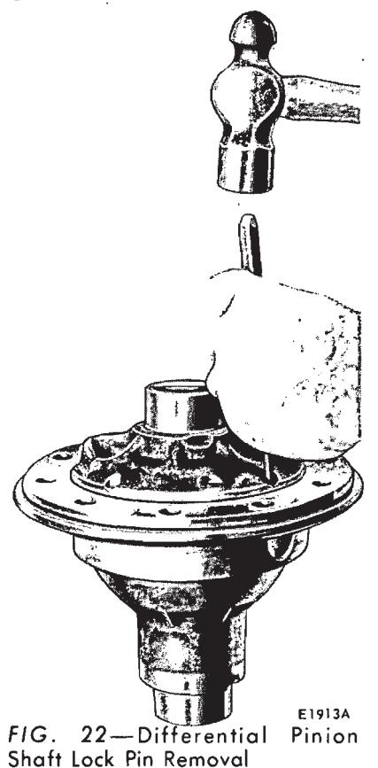
Fig. 22 — Driving Out Differential Pinion Shaft Lock Pin
-
With a micrometer, measure the thickness of the original shim removed from the axle and use the same thickness upon installation of the replacement carrier assembly or drive pinion.
-
If further shim change is necessary, it will be indicated in the tooth pattern check.
-
If the original shim is lost, substitute a nominal shim for the original and use the tooth pattern check to determine if further shim changes are required. Nominal shim thickness is indicated in Part 15-7. Specifications.
A new ring gear and pinion should always be installed in an axle as a matched set (never separately). Be sure the same identifying (matching) number, painted in white, appears on the bolt hole face of the ring gear and on the head of the drive pinion (Fig. 24).
-
After determining the correct shim thickness as explained in the foregoing steps, install the new pinion and ring gear as outlined under Assembly.
Differential Case, Bearings, and Ring Gear
If the ring gear runout check (before disassembly) exceeded specifications, the condition may be caused by a warped gear, a defective case, or excessively worn differential bearings.
To determine the cause of excessive runout proceed as follows:
-
Assemble the two halves of the differential case together without the ring gear, and press the two differential side bearings on the case hubs.
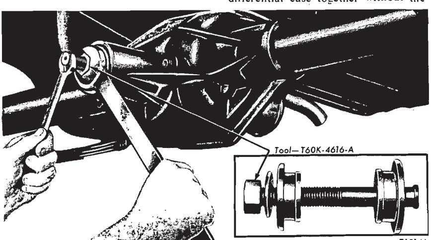
Fig. 23 — Pinion Bearing Cup Removal or Installation -
Place the cups on the bearings and set the differential case in the carrier.
-
Install the bearing caps and adjusting nuts as outlined in steps 11 thru 14 under Installation of Drive Pinion and Differential Case in this section
-
Tighten the right nut two notches beyond the position where it first contacts the bearing cup. Rotate the differential case several revolutions in each direction while the bearings are loaded to seat the bearings in their cups. This step is important.
-
Again loosen the right nut to release the preload. Check to see that the left nut contacts the bearing cup. Using the dial indicator set-up shown in Fig. 11, Part 15-1, adjust the preload to 0.008 to 0.012 case spread for new bearings or 0.005 to 0.008 for the original bearings, if reused.
-
Check the runout of the differential case flange with a dial indicator. If the runout does not now ex- - ceed specifications, install a new ring gear. If the runout still exceeds specifications, the ring gear is true and the trouble is due to either a defective case or worn bearings.
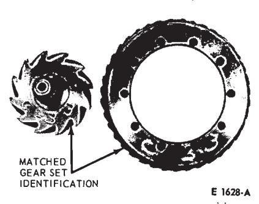
Fig. 24 — Pinion and Ring Gear Marking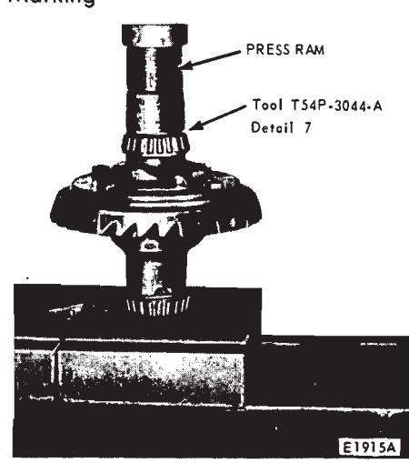
Fig. 25 — Differential Bearing Installation -
Remove the differential case from the carrier and remove the side bearings from the case.
-
Install new bearings on the case hubs, and again install the differential assembly in the carrier without the ring gear.
-
Check the case runout again with the new bearings. If the runout is now within limits, the old bearings were excessively worn. Use the new bearings for assembly. If the runout is still excessive, the case is damaged and should be replaced.
Assembly
Refer to Part 15-1 for Cleaning and Inspection before starting assembly operations.
Assembly of Differential Case
- Lubricate all the differential parts with axle lubricant, before they are installed in the case.
- Place the side gears and thrust washers in the case.
- Place the two pinion gears and thrust washers exactly opposite each other in the case openings and in mesh with the side gears.
- Turn the pinions and thrust washers until the holes in the pinion gears align with the pinion shaft holes in the case.
- Start the pinion shaft into the differential case. Carefully align the shaft lock pin hole with the pin hole in the case. Drive the shaft into place and install the lock pin (Fig. 22).
- Place the ring gear on the differential case and install the bolts. Torque the bolts to specification.
- If the differential bearings have been removed, press them on as shown in Fig. 25.
Installation of Drive Pinion and Differential Case
- Place the shim and pinion rear bearing cone on the pinion shaft. Press the bearing and shim firmly against the pinion shaft shoulder (Fig. 20).
- Place a new pinion bearing preload spacer on the pinion shaft.
- Lubricate the pinion rear bearing with axle lubricant.
- Lubricate the pinion front bearing cone and place it in the housing.
- Install a new pinion oil seal in the carrier casting (Fig. 12).
- Insert the drive pinion shaft flange into the seal and hold it firmly against the pinion front bearing cone. From the rear of the carrier casting, insert the pinion shaft into the flange.
- Start a new pinion shaft nut. Hold the flange with the tool shown in Fig. 10 and tighten the pinion shaft nut. As the pinion shaft nut is tightened, the pinion shaft is pulled into the front bearing cone and into the flange.
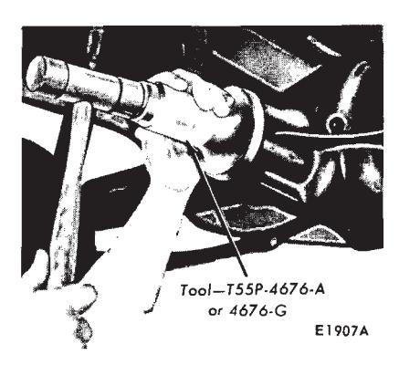
Fig. 12 — Typical Drive Pinion Flange Seal Installation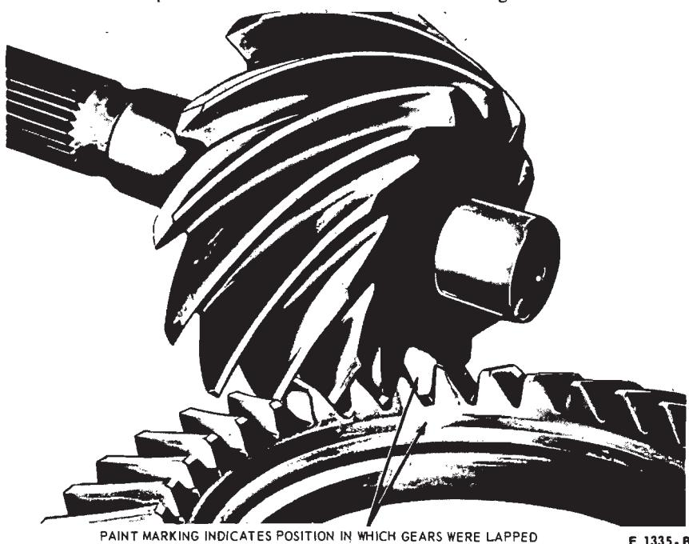
Fig. 26 — Typical Gear Set Timing Marks
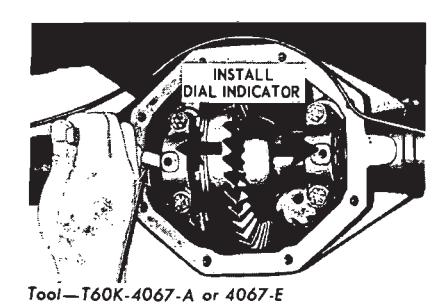
Fig. 27 — Backlash and Bearing Pre-Load Adjustment
As the pinion shaft is pulled into the front bearing cone, pinion shaft end play is reduced. While there is still end play in the pinion shaft, the flange and cone will be felt to bottom. This indicates that the bearing cone and flange have bottomed on the collapsible spacer.
From this point, a much greater torque must be applied to turn the pinion shaft nut, since the spacer must be collapsed. From this point, also, the nut should be tightened very slowly and the pinion shaft end play checked often, so that the pinion bearing preload does not exceed the limits (Fig. 7).
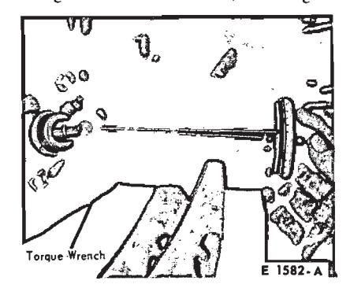
Fig. 7 — Checking Pinion Bearing PreloadIf the pinion shaft nut is tightened to the point that pinion bearing preload exceeds the limits, the pinion shaft must be removed and a new collapsible spacer installed. Do not decrease the preload by loosening the pinion shaft nut. This will remove the compression between the pinion front and rear bearing cones and the collapsible spacer and may permit the front bearing cone to turn on the pinion shaft.
-
As soon as there is preload on the bearings, turn the pinion shaft in both directions several times to set the bearing rollers.
-
Adjust the bearing preload to specification. Measure the preload with the tool shown in Fig. 7.
-
Apply a thin coating of lubricant on the bearing bores so that the differential bearing cups will move easily.
-
Place the cups on the bearings and set the differential case assembly in the carrier casting (Fig. 18).
If the gear set is of the non-hunting or partial non-hunting type, assemble the differential case and ring gear assembly in the carrier so that the marked tooth on the pinion indexes between the marked teeth on the ring gear as shown in Fig. 26.
In almost every case of improper assembly (gears assembled out of time), the noise level and probability of failure will be higher than they would be with properly assembled gears.
When installing the hunting type gear set (no timing marks), assemble the differential case and ring gear assembly in the carrier without regard to the matching of any particular gear teeth.
-
Slide the case assembly along the bores until a slight amount of backlash is felt between the gear teeth. Hold the differential case in place.
-
Set the adjusting nuts in the bores so that they just contact the bearing cups.
-
Carefully position the bearing caps on the carrier casting. Match the marks made when the caps were removed
-
Install the bearing cap bolts and lockwashers. As the bolts are tightened, turn the adjusting nut with the tool shown in Fig. 27.
-
If the adjusting nuts do not turn freely as the cap bolts are tightened, remove the bearing caps and again inspect for damaged threads or incorrectly positioned caps. Tightening the bolts to the specified torque is done to be sure that the cups and adjusting nuts are seated. Loosen the cap bolts, and torque them to only 5 ft-lbs before making adjustments. Refer to Part 15-01 for backlash and bearing preload adjustment procedures.